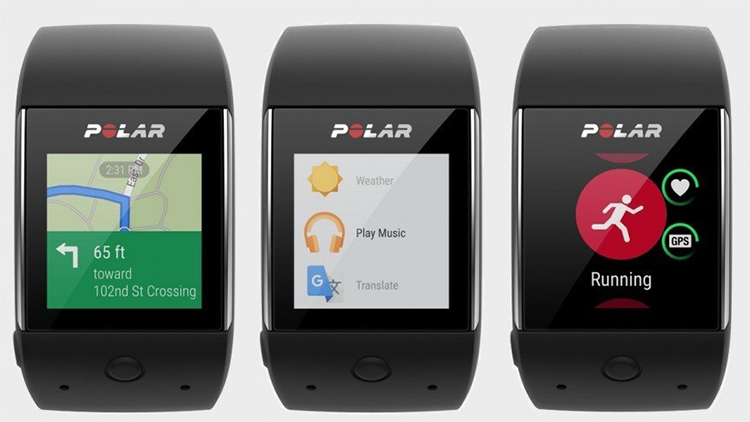

Не знала, что себе купить - обратилась к ребятам из RunSmart - подобрали пульсометр, который подошёл именно под мои цели и финансовые возможности. Через некоторое время решила обновить гаджет - не раздумывая обратилась туда же.
Новые цели - новый гаджет!
Спасибо, RunSmart!

Крутая штука-пульсометр. Обычно без них бегал. Оказывается только хуже себе делал. Купил пульсометр, ещё в подарок получил тренировку. Со мной вместе провели первую тренировку, научили пользоваться новым гаджетом. Также объяснили основы анатомии, составили план тренировок на месяц вперёд.
С ними подготовился к своему первому полумарафону! Спасибо!!!

Долго не могла начать бегать, т.к. до этого несколько раз начинала, но становилось тяжело и я бросала. От друзей услышала о RunSmart и о беге с контролем пульса и решила попробовать.
Позвонила, ребята поинтересовались моими целями и подобрали очень интересный вариант со скидкой! Теперь бегаю и наслаждаюсь бегом! Пробежала уже 2 полумарафона и несколько более коротких забегов и не намерена останавливаться!
Спасибо!!!